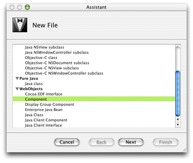
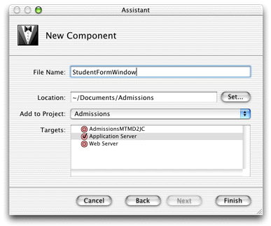
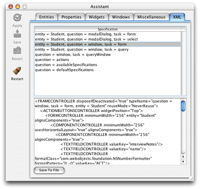
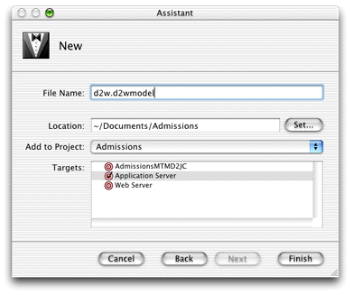
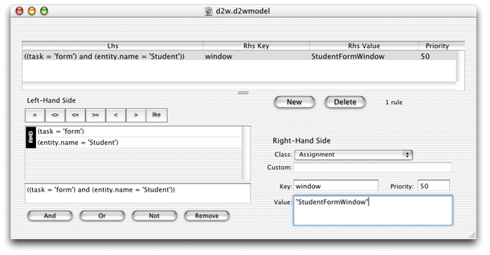

Problem: You need more finely grained control over the user interface than the Direct to Java Client Assistant allows.
Solution: Use the XML generated by Assistant as a starting point, then edit it by hand to suit your needs.
Freezing XML is another way to customize Direct to Java Client applications. While Assistant allows you to make basic user interface customizations to your application, it is necessarily limited. Freezing XML, however, gives you finer control over your application's user interface. With that said, you should use Assistant as much as you can since freezing XML makes your application more complex and less flexible than just using Assistant.
Freezing XML involves these steps:
.html file| Note: Before freezing XML, your data model should be as complete as possible. When just using Assistant to customize applications, changes to data models are automatically picked up in most cases. However, the more advanced customization techniques, starting with XML freezing, make data model–user interface synchronization more difficult. |
Follow these steps to customize the user interface of the Admissions application using frozen XML:
Figure 13-1 Select Component as the file type
The recommend convention for naming frozen XML components is EntityNameTaskNameWindowType. So, if the entity in question is Student, and the task is query, the frozen XML component should be named "StudentQueryWindow."
Click Finish.
Figure 13-2 Name new component "StudentFormWindow"
com.webobjects.directtoweb and
change the superclass of StudentFormWindow to D2WComponent,
as shown in Listing 13-1.Listing 13-1 Change the superclass of StudentFormWindow to D2WComponent
import com.webobjects.foundation.*; import com.webobjects.appserver.*; import com.webobjects.eocontrol.*; import com.webobjects.eoaccess.*; import com.webobjects.directtoweb.*; public class StudentFormWindow extends D2WComponent { public StudentFormWindow(WOContext context) { super(context); } }Figure 13-3 XML description of Student entity, form window
StudentFormWindow.html file
in Project Builder. StudentFormWindow.html is
in the StudentFormWindow component.d2w.d2wmodel file.You
need to make a new .d2wmodel file
for a few reasons. First, Assistant stores its rules in the user.d2wmodel file
and writes out this file whenever it saves. So, any rules you add
or change manually in the user.d2wmodel file
is wiped out by Assistant.
By writing rules in a separate
file, you can maintain a custom set of rules and still use Assistant
for basic customizations. At runtime, all the user.d2wmodel files
in the frameworks and all the d2w.d2wmodel files
in your project and in your project's frameworks are merged, so
the rule system picks up your custom rules and the rules you specified
with Assistant, along with all the default rules.
Figure 13-4 Make a new rule file for custom rules
d2w.d2wmodel file
to the Rule Editor icon in the Dock to open it. (task = 'form') and (entity.name
= 'Student').Collectively, the left-hand side arguments constitute the rule's condition. If the condition exists (that is, the user or application performs some action that triggers the condition), the rule fires and the right-hand side of the rule is evaluated.
In this case,
if the query task is triggered (usually by a user action) on the
Student entity, the condition of this rule is true,
so the rule fires. Collectively, the left-hand side arguments ask
"how should this part of the application behave?" And since
the condition has been triggered, the behavior of this part of the
application is changed per the right-hand side arguments.
As mentioned earlier, Direct to Java Client applications have four basic tasks: query, form, list, and identify. (The rule system defines other tasks with which you usually do not need to interact). In this step, specifying task=form tells the rule system that this rule pertains to the form task. By specifying the entity with entity.name=Student, the rule system knows that this rule pertains to the form task for the Student entity. However, if you want to use the frozen XML window for the query task, you would instead specify task=query.
Figure 13-5 Add a rule to use frozen XML
The right-hand side arguments constitute the answer to the question posed in the left-hand side arguments. The answer is made up of a key and a value for that key. In this case, the key is "window" and the value is "StudentFormWindow." So in this case, the answer is "use the StudentFormWindow as the window for form tasks for the Student entity."
For
high-level questions like controller, window,
and modalDialog, the
rule system expects the value to be the name of a D2WComponent,
like StudentFormWindow or any of the default D2WComponent classes
defined in com.webobjects.eogeneration.*; (see /System/Library/Frameworks/JavaEOGeneration.framework/Resources/).
.d2wmodel file.